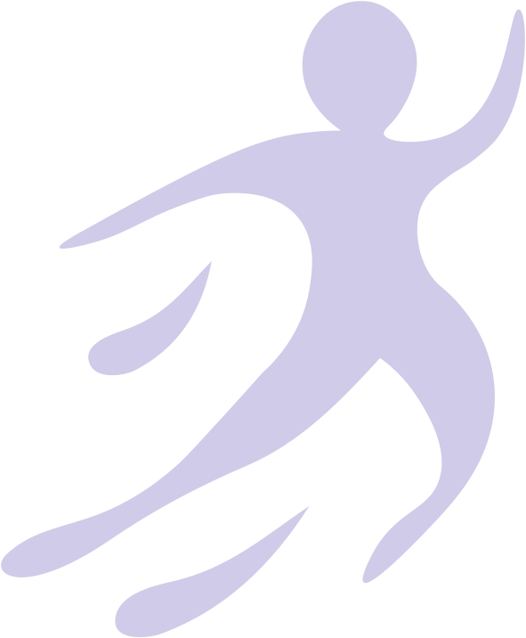

Psicología
Acompañamiento en ansiedad, estado de ánimo, duelo y procesos personales. Un espacio para hablar y encontrar herramientas a tu ritmo.
Agendar por WhatsAppCentro terapéutico en Lomas Coloradas
Psicología, terapia ocupacional, fonoaudiología y kinesiología. Un equipo que te escucha y te acompaña, en un lugar pensado para tu bienestar.
Especialidades
Cada proceso es distinto. Trabajamos juntos para encontrar el acompañamiento que necesitas.
Acompañamiento en ansiedad, estado de ánimo, duelo y procesos personales. Un espacio para hablar y encontrar herramientas a tu ritmo.
Agendar por WhatsAppApoyo para recuperar autonomía en la vida diaria: integración sensorial, adaptaciones y acompañamiento en casa, el colegio o el trabajo.
Agendar por WhatsAppEvaluación y terapia para el habla, el lenguaje, la audición y la deglución, en niños, niñas y adultos.
Agendar por WhatsApp
Rehabilitación y movimiento para aliviar el dolor, recuperar movilidad y volver a tus actividades con seguridad.
Agendar por WhatsAppCómo funciona
Sin formularios ni trámites: nos escribes y coordinamos todo por WhatsApp.
Cuéntanos qué necesitas. Te orientamos sobre la especialidad que mejor se ajusta a ti.
Buscamos juntos un día y horario que te acomode, para que tu visita sea tranquila.
Te recibimos en Lomas Coloradas para iniciar tu proceso, con el tiempo y la calma que mereces.
Contacto
Escríbenos para coordinar tu primera consulta. Te respondemos a la brevedad.

Te atendemos con hora coordinada, en un espacio tranquilo y privado en Lomas Coloradas.
Escribir por WhatsAppAtención presencial · San Pedro